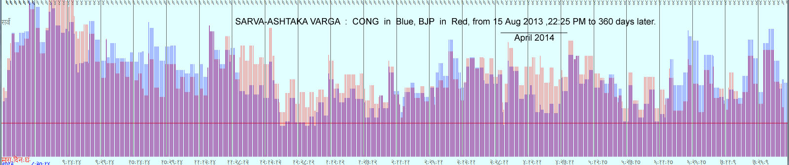
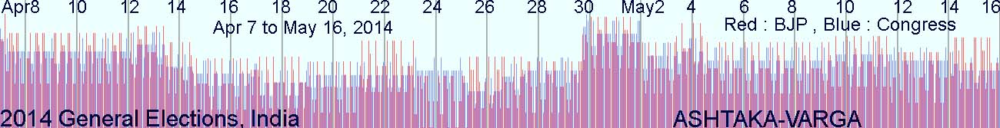
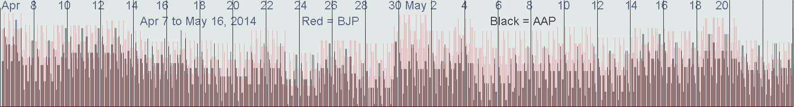

|
Table of Contents
|
Given Data
Congress-I was founded at New Delhi on 2nd Jan 1978 at Noon, after BTR (birth time rectification) I got the time as 12:05:07.3 .
BJP was founded at New Delhi on 6th Apr 1980 at 11:45 from internet sources, after BTR (birth time rectification) I got the time as 11:38:08.
Long-term Ashtaka-varga (AV) of Congress and BJP for 2014 AD
Ashtaka Varga (AV) is a handy tool for comparing the graphs of two competitors. Kundalee Software has a built in tool for producing short-term or long-term AV graphs, which can be copy-pasted in Photoshop to generate a composite picture by making the top layer 50% transparent. Here is the 360-day graph of Congress-vs-BJP from 15 Aug 2013 to 360 days later. 30 days of April 2014 have been marked, when most of the Lok Sabha polls are expected to take place.
**Recent elections in many states were very good for BJP as the AV graph above shows. Hence, forecast based on AV alone proved to be correct : this picture was uploaded months before the state-level elections.
But AAP (Aam AAdmi Party) rose to power in Delhi at the end of 2013, which is also corroborated in the picture above in which both BJP and Congress have lower graphs. Although BJP's lines were far higher than those of Congress, absolute heights of BJP's lines are far lower than those in previous elections in Rajasthan, MP, Chhatissgarh. Hence, this prediction through AV also proved to be correct. At that time, I had no idea that AAP will contest the polls or Delhi polls will be held in the end of 2013.**
During April 2014, we see low level of graph for both Congress and BJP, indicating ample ground for other parties. BJP has an upper hand on Congress in April. If all polls are held in April 2014, BJP will certainly surpass Congress, but none will gain a majority due to low level of AV graph. But during some days of in first week of April and first week in May the graphs are high. Hence, the final outcome will depend on actual poll dates.
Above matter was last edited on 15th Aug, 2013. The picture above excludes lagnaashtakavarga (lagna-AV) and Chandra-AV because they are too short term to be represented in a long term graph.
More Detailed Ashtaka-varga (AV) of Congress and BJP for Apr-May 2014 AD
The picture below shows the same picture with all eight AVs including Lagna-AV and Chandra-AV for a short period from start of 7th April to 16th May 2014, when general elections are supposed to be held.
The first picture above shows that for the expected period of coming general elections in Apr-May 2014, BJP's AV strengths (Rekhaas) are higher than those of Congress in six AVs (except Lagna's and Moon's AVs). The second picture is far finer and shows each lagna-wise rekhaas (lines) of AV, in which BJP's lines are far higher than those of Congress, but there are a lot of lagnas in which Congress has higher lines but both BJP and Congress have low lines is those periods which are good for Congress, which indicates that when BJP is weak Congress is also not strong and other forces are likely to share considerable chunks of votes.
Congress Prospects in 2014 Elections :
AV should not be the sole basis of prognostication, because in spite of its usefulness as shown above, it may betray us if Vimshottari results are far stronger in opposite direction.. Hence, let us see the D1 and D10 graphs according to respective Vimshottaris of both major parties BJP and Congress.
D1 Vimshottari
During the expected election period, Vimshottari planets are : (MD means Mahaa-dashaa, and so on) MD-Jupiter, AD-Venus and PD-Venus. SD and PrD are too short-termed to be discussed here.
MD planet Jupiter is yoga-giver being 1L + 10L (1L means lord of first house, i.e., lagnesha, and so on), with almost full aspect on 10H (10th house). That is why Congress is in power during Jupiter's MD which began in June 2006 (before that, Congress was in power since 2004 but was weaker during first two years of its power).
But the current AD (and PD) planet Venus is malefic for Congress : Venus is 3L + 8L, combust in 6L Sun, and Venus sits inimically in 10H.
In SC (Sudarshana Chakra), MD was fine in LK and SK (LK = Lagna Kundali ; SK = Surya Kundali ; CK = Chandra Kundali) : Jupiter was yoga-giver as 1L + 10L in LK , and also in SK being 1L + 4L. But in CK Jupiter is 4L + 7L in 10H : kendraadhipati dosha. Combining three charts, Jupiter is more good than bad, hence it ensured power for Congress. But Jupiter is weak, being in bitter enemy's sign. Hence, in spite of enjoying power, Congress remained weak, and will remain so during the remaining 8 years of Jupiter's MD. But we must not hurry to conclusions on the basis of incomplete analysis, or even a fuller analysis of any single chart.
In SC, Venus is bad in LK as already shown, and in SK too being 6L + 11L, but it was combust in 9L Sun and both in lagna, which mitigated some evils of venus. In CK, Venus is 2L + 9L in 4H, hence potentially good, but this goodness subdued by 12L Sun with which Venus was combust in 4H. On the whole, Venus is more bad than good.
Hence, in spite of good but weak MD, AD and PD are not good for Congress.
But VPC (Varsha-Pravesha-Chakra) has 6L + 9L Jupiter in 12H, in bitter inimicak sign. And Venus is in 6H as 4L + 11L, combust in 2L Sun there, Sun being bitter enemy of Venus and a malefic 3L + 12L Mercury also there. MPC (Maasa-Pravesha-Chakra) for Apr 1 to May 2, 2014, also had bad Jupiter which is 2L + 5L in 8H., while next MPC has Jupiter with kendradhipati dosha, being 4L + 7L, in 11H where it is malefic. H
D10 Vimshottari
D10's Vimshottari sequesce is : MD-Rahu, AD-Mars (till 28th Aug, 2014), and PD-Mercury till 17th Apr followed with Ketu's PD till 8th May.
MD-planet Rahu : in LK, 12L Rahu in 6H having VRY but bitter inimical to 10H and sitting with two bitter enemies. In SK, Rahu was 10L in 4H but with same two bitter enemies which were malefic. In CK, Rahu in 12H as 3L with malefic Jupiter and good Mercury but both bitter enemies of Rahu. Hence, on the whole Rahu is not good but D10 has much smaller Vimshopaka strength than D1. That is why a bad MD in D10 could not cancewl rajayoga MD of D1, although strength of D1's MD which was already weak was further reduced by D1's MD.
Thus, on the whole MD is still good for Congress but SD and PD are bad. Combining the results of D1, D10, VPC, MPC and AV, Congress has no chances of winning the coming elections..
BJP Prospects in 2014 Elections :
D1 Vimshottari
Sun's MD will end on Jan 16, 2015. Sun sits in 10H but as 3L which makes it malefic. In SK, it is 6L in lagna, again malefic. In CK Sun sits in 5H as 10L, hence highly
benefic Hence, Sun is bad but not very bad.
Venus AD will also end with Sun's MD. Venus is in own sign but in 12H in LK as 5L +12L , in SK it is in 3H as 3L + 8L, and in CK Venus is in 7H as 7L +12L. Although Venus has malefic traits, it was during Venus MD that BJP got strength and even power at Centre during 6 years out of 20 years of Venus. Hence, during its AD it will not be bad for BJP, although not always good. Combining MD's and AD's results, it may be said that final outcome is not bright and depends on PD.
PD planet Sun ends on night of 12-13 Apr. Sun is slightly bad, but thereafter Moon is neecha (debilitated) in 6H in LK : VRY (Vipareeta Raaja Yoga). In SK, Moon is in 9H but in sign of Mars which is highly benefic because of being 9L + 2L and sitting in 5H and Mars having 35' (59%) fast friendly aspect on Moon, and in CK Moon was in lagna with its lord Mars in 9H having same good aspect. Hence, Moon's PD from early 13th Apr to 2nd Jun 2014 is highly benefic for BJP. **It is noteworthy that Moon has vedha on "n" (Narendra Modi, besides on some other letters which have no relation with any contender of power and which have malefic vedhas from other planets ; "n" has only one bad vedha : from Ketu which is 6L and therefore creates a lots of enemies for Narendra Modi, but Ketu sits in 9H and therefore the combined effects give an upper hand to Modi over his enemies and rivals).
VPC (which is same as MPC) has MD-planet Sun in 4H as 9L in fast friend's sign with exalted Venus, the latter being AD-planet for D1. In LK, Venus is malefic as 6L + 11L but combust in benefic Sun. In SK, Sun is 6L but in lagna with exalted 3L + 8L Venus, and in CK Sun is 7L in 2H with exalted Venus as yoga giver : 4L + 9L. Thus, Sun and Venus are in good houses in all three SC charts, while maleficence of Venus in LK is cancelled by its raja-yoga in CK. On the whole, Sun + Venus are neither good nor bad. That is why in spite of weakness of Congress, BJP has not been able to win all the anti-Congress votes and its opponent AAP got a chance to rise.
D10 Vimshottari
Its Vimshottari sequence is : MD-Venus, AD-Mercury for 7 months more, and PD=Jupiter for 46 days since Apr 7.
Venus is raja-yoga giver as 5L + 10 L, but in 8H and in bitter enemy's sign. Sun sits in lagna, hence LK and SK are same, and CK is therefore irrelevant.
Mercury is 6L + 9L in 10H in fast friend sign of Venus with 69% aspect of Venus : hence Venus will give only its benefic results during AD of Mercury while malefic results of Venus should be delivered during AD of enemies of Venus.
Jupiter in 3L + 12L in 10H, hence PD is bad.
But D1's PD is very strong, hence overall results of D1 plus D10 is in favour of BJP, but the chances are not very very bright for BJP, while Congress has very bad prospects. It means BJP is not going to gain majority on its own and will need others. Congress has no chances of winning power even with support of others. Prospects of AAP have not been analyzed.
Aam Aadmi Party (AAP)
It was formally founded at Constitution Club in New Delhi at Noon on 26th Nove, 2012, although decision to form a new political party was taken on 2nd Oct 2012.
Longitude 77:12:47.68 (of Constitution Club)
Latitude 28:37:10.62
D1 and its Vimshottari
AAP has two excellent planets in the 9H of Fortune : raja-yoga giver Venus as 4L + 9L in its moolatrinone in 9H, with exalted Saturn as 1L + 2L, both neutral to each other, hence their raja yogas do not cancel and add up to make a formidable benefic yoga for 9H, 1H, 2H and 4H. Fortunately for APP, its Venus MD is running till May 2030, Venus AD till 25th March 2014, followed with Sun's AD during coming general elections, PD Sun till 11th Apr followed with Moon's PD till 12th May, 2014. Sun as 8L in 10 H is not good, and 2L neecha Rahu is further eroding the prospects of Sun. 5L + 6L Mercury is also not good. Hence, the euphoria created during Venus AD will wither away during Sun's AD. Moon's PD, which will cover major part of coming general elections, is also not fine, Moon being 7L in inimical house in 3H.
SK has both Venus and Saturn in 12H : Venus not good being 7L + 12L and Saturn 3L + 4L. CK has both of them in 7H, Venus not very good being 7L + 2L (but good for money) and Saturn 10L + 11L. Overall prospects of Venus in SC are good but not very good due to very strong yogas in LK due to bad SK and weak CK.
VPC has Venus in 8H in enemy's sign as lagnesh and 6L, hence marring AAP's prospects, while AD planet Sun is in fast friendly house in 7H as 4L, while PD planet Moon is malefic : 3L in 4H. 10L Saturn sits in 6H.
D10 and its Vimshottari
D-10's Vimshottari has Sun's MD,
Mars-AD till 6th May followed with Rahu's AD ; and
Venus-PD till Apr 19, followed with Sun's PD till 26th Apr, and then Moon's PD till 6th May, then Mars-PD.
MD-Sun is malefic in D-10 : 11L in bitter enemy's sign in 4H with benefic but combust Saturn : Sun's maleficence gets cancelled with rajayoga of Saturn (4L + 5L in own sign but combust). In SK, Sun is 8L while in CK lagnesha Sun languishes in 6H. Overall Sun is not good but not very bad either.
AD-Mars till 6th May : Mars being 2L + 7L it its moola-trikona in 7H with highly malefic 3L + 6L retrograde Jupiter. Good prospects of Mars are marred by Jupiter. In SK, Mars is malefic : 11L + 4L witgh malefic Jupiter. In CK Mars is yoga-giver : 4L + 9L. Overall Mars in SC is almost neutral or slightly good.
After 6th May, bad Rahu in 6H is bad in LK and is bad in CK too in 8H, and slightly good in SK : hence overall Rahu in SC is bad.
PD in SC : Venus is good, Sun not good but not very bad either, and Moon somewhat bad. Hence, AAP's performance with gradually decline during various phases of polls.
But D10 is weaker than D1, hence in the absence of very strong Vimshottari planets in D10, we should ignore D10 and rest our conclusions on D1, VPC and AV.
AV (Ashtakavarga) Comparison of BJP and AAP
As shown in the picture below, BJP is far ahead of AAP in AV for the same period of coming general elections during which BJP is far ahead of Congress too.
-Vinay Jha , above predictions uploaded on Mar 3, 2014 at 4:07 am.